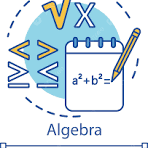
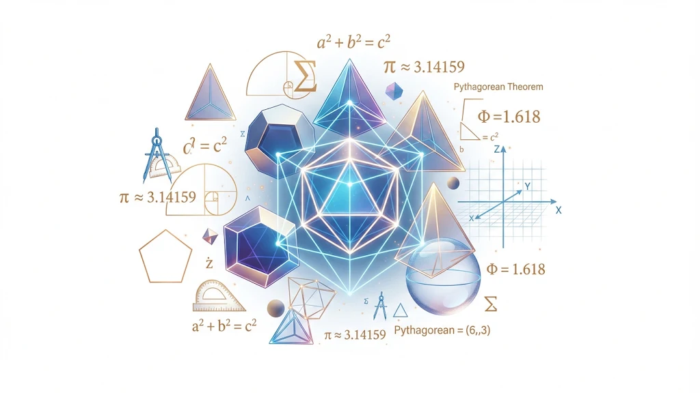

Matemática e Sociologia
Matemática
Matemática é a ciência que estuda os números, as formas, as estruturas e as relações entre eles. Ela é fundamental para diversas áreas do conhecimento, como física, engenharia, economia e tecnologia.
Sociologia
Sociologia é a ciência que estuda a sociedade, suas instituições, relações sociais e comportamentos humanos. Ela busca compreender como os indivíduos interagem e como as estruturas sociais influenciam a vida das pessoas.

